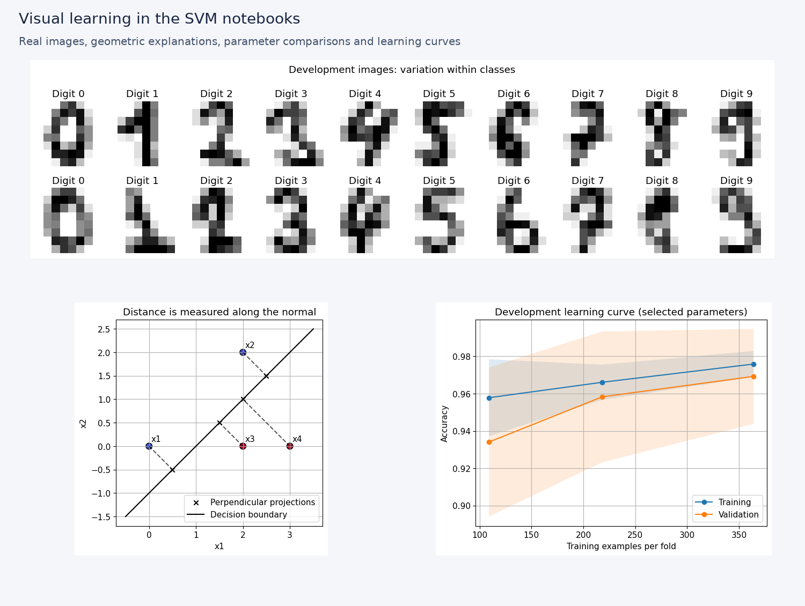

CLASS 01 Iris species
Linear SVMs
Geometry, margins and robustness
Explore the maximum-margin boundary, implement a perceptron baseline and measure sensitivity to input noise.
7 coding tasks10 quiz questionsReal-data project
A hands-on companion to the lecture series: connect the mathematics to code, explore visual experiments and apply support vector machines to real datasets.
Geometry, margins and robustness
Explore the maximum-margin boundary, implement a perceptron baseline and measure sensitivity to input noise.
Optimization and support vectors
Derive the dual, inspect KKT conditions and reconstruct a binary classifier from its support vectors.
Nonlinear patterns and implicit features
Build polynomial and RBF kernels, compare kernel families and inspect real handwritten-digit errors.
Regularization and model selection
Implement hinge loss, explore C and gamma, and evaluate a model with five-fold cross-validation.
Open a class notebook, sign in to Google, and save a copy in Drive for your work. Run cells in order. Complete the coding tasks and record your predictions, quiz answers and explanations.
Each mini-project includes five-fold cross-validation, explicit hyperparameter grids, a baseline and a separate held-out test. Learn to explain your choice, rather than chase a score.

Core lecture activities: about 90 minutes. Deepening labs and mini-project: another 2–3 hours. Datasets are included with scikit-learn. Textbook context: Learning From Data. Student workbooks contain intentionally incomplete implementation tasks.